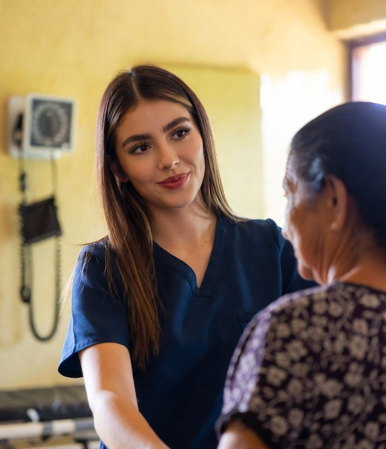

Llevar salud a comunidades rurales sigue siendo una necesidad urgente
El Proyecto San Francisco de Asís nació con el propósito de acercar atención médica a personas de escasos recursos en municipios del sur de Francisco Morazán, entre ellos Reitoca, Curarén, Alubarén, La Libertad y San Miguelito.
En estas zonas, el acceso a servicios de salud de calidad suele ser más limitado, por lo que el proyecto ha representado una respuesta concreta y cercana para muchas familias.
Su trabajo se ha desarrollado a través de tres áreas principales: Clínica Santa María, Laboratorio Santa María y Farmacia San Francisco de Asís, además de otras atenciones complementarias brindadas a lo largo del tiempo.
Hablar de salud rural también es hablar de dignidad, acompañamiento y esperanza. Por eso, sostener y fortalecer iniciativas como esta sigue siendo una tarea de gran valor humano y social.